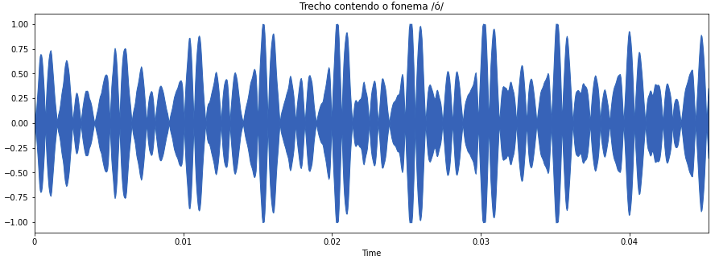
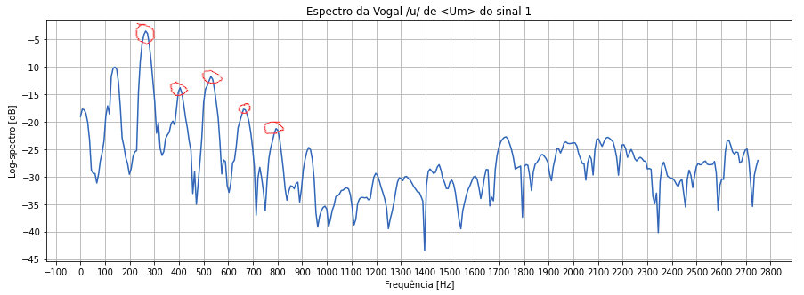

Foram gravados três audios: um contendo a voz de dígitos numéricos, outro com voz falada e outro com voz declamada. Para cada áudio foram analisadas diversas características do sinal conforme abaixo:


Para cada sinal foi selecionado um fonema e feita uma análise do Pitch, sua frequência fundamental e formantes conforme abaixo:
Para o sinal 1 foi selecionado o fonema /u/ da palavra "Um":
O sinal no tempo e a auto-correlação do trecho selecionado são exibidos nas figuras abaixo:
A auto-correlação revela a periodícidade no espectro e partir do gráfico conseguimos detectar o peŕiodo de Pitch como T=3,6ms e a frquência fundamental f0=278Hz
Para o sinal 2 foi selecionado o fonema /a/ da palavra "Vieira":
O sinal no tempo e a auto-correlação do trecho selecionado são exibidos nas figuras abaixo:

A partir do gráfico conseguimos detectar o peŕiodo de Pitch como T=10,5ms e a frquência fundamental f0=95Hz
Para o sinal 3 foi selecionado o fonema /ó/ da palavra "Só":
O sinal no tempo e a auto-correlação do trecho selecionado são exibidos nas figuras abaixo:

A partir do gráfico conseguimos detectar o peŕiodo de Pitch como T=1,5ms e a frquência fundamental f0=667Hz
As figuras abaixo apresentam o espectro de cada trecho com o primeiro circulo vermelho representando a frequequência fundamental e os seguintes as formantes.
A tabela abaixo resume todas as formantes enontradas visulamente no gráfico de cada trecho e também um comparativo entre os valores encontrados da fundamental utilizando tanto a autocorrelação quanto o espectro. Percebe-se que em ambos os métodos a fundamental encontrada é similar
| Fonema | f0 - Autocorrelação | f0 - Espectro | f1 | f2 | f3 | f4 |
|---|---|---|---|---|---|---|
| Sinal 1 - /u/ | 278Hz | 275Hz | 400Hz | 530Hz | 680Hz | 792Hz |
| Sinal 2 - /a/ | 95Hz | 95Hz | 180Hz | 290Hz | 380Hz | 450Hz |
| Sinal 3 - /ó/ | 667Hz | 630Hz | 800Hz | 1000Hz | 1200Hz | 14200Hz |
O trecho abaixo apresenta a consoante "S" na palavra "Só", podemos identificar pelo aspecto do sinal no domínio do tempo que parece um ruido branco e pela distribuição homogênea das frequencias no espectro

O trecho abaixo apresenta a consoante "P" na palavra "Passa", podemos identificar o som plosivo no domínio do tempo que ocorre repentinamente depois de um período sem som
O trecho abaixo apresenta a consoante J, percebe-se pela baixa energia que ele tem em cmparaçao com as vogais que cercam o som dele no domínio do tempo e também pelo espalhamento da frequência no espectro
Os relatórios podem ser encontrados ná página do github e o código em python e outros arquivos no google drive